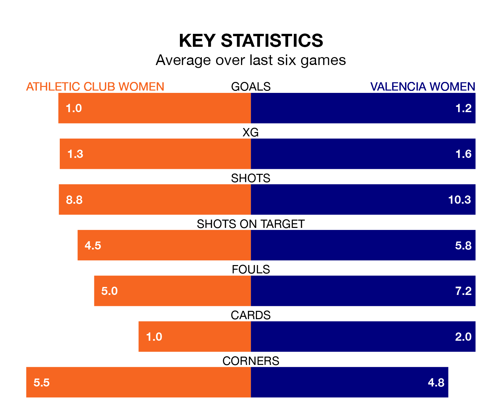

Athletic Club Women are heavy favourites to keep all three points at home in Sunday's late kick-off against Valencia Women.
Athletic Club, who sit seventh in Liga F with 19 games played, are priced at 1.6 to seal victory at Instalaciones de Lezama Campo 1.
Sitting five places and 10 points behind them in the table, Valencia are 4.4 to win with *Betting Company*, while the draw is at 3.6.
In the last 10 years, Athletic Club and Valencia have played each other on 19 occasions. Athletic Club won 10 of them, Valencia five, and they drew four times.
On average, Athletic Club scored 1.5 goals and Valencia 1.3 in those matches.
Their last meeting was on November 18, when Athletic Club won 2-1 away.
In Adriana Nanclares Romero, Athletic Club can rely on one of the league's safest pair of hands. She has kept five clean sheets in her 13 appearances this season, and only two other 'keepers – Barcelona Women's Catalina Thomas Coll Lluch and Levante Women's Emma Holmgren – have been able to prevent the opposition scoring on more occasions in Liga F.
In Valencia's net, Antonia Ignacia Canales Pacheco has two clean sheets in 12 games. She has conceded a goal every 44 minutes, twice as often as the 90 minutes between goals for Nanclares Romero.
With 20 goals in 19 games so far this season, the hosts are scoring at below the league average rate with 1.1 goals per game. But they are conceding fewer than average too, letting in 24 goals at a rate of 1.3 per game.
The away side are also below average scorers, with 1.2 goals per game, compared to a league average of 1.6. They have conceded 2.3 goals per game.
Athletic Club are in mixed form in Liga F, with three wins and a draw from their last six games.
With a win and two draws over that period, Valencia's form is worse – they have taken five points from 18, compared to Athletic Club's 10.
Athletic Club's last match was on March 10, a 2-1 win against Levante Women, with Ane Azcona Fuente and Maddi Torre Larrañaga getting the goals for Athletic Club.
Valencia drew 2-2 with Real Betis Women last time out, also on March 10, with Ana Marcos Moral and Marina Martí Serna on the scoresheet.
Updated: 15:10 (UTC), 15/03/24